De investigación. Propuesto por Juan Carlos Salazar, profesor de Geometría del Equipo Olímpico de Venezuela.(Puerto Ordaz) Problema 301 En el triángulo ABC (<A=90º), construir el círculo (O1, r1) tangente externamente a los excírculos (Ib) e (Ic) de tal forma que sea también tangente al lado BC, con el punto de tangencia entre B y C. Probar que:
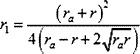 Donde: ra= radio del excirculo (Ia) y r = inradio de ABC. Salazar, J.C. (2006): Comunicación personal. Solución de José María Pedret, Ingeniero Naval. Esplugues de Llobregat (Barcelona). (05 de marzo de 2006) |
|
DESARROLLO |
|
CONDICIONES DEL ENUNCIADO
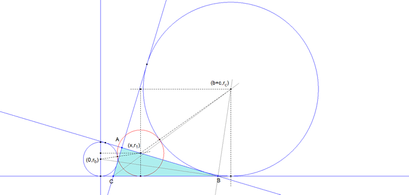 Sea Un sistema de referencia rectangular cuyo eje de abscisas es el lado BC y cuyo eje de ordenadas es la perpendicular a BC por el centro de Γb. En estas condiciones tenemos:
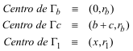 Donde hemos recordado que la distancia entre los puntos de contacto del los círculos ex-inscritos es la suma de los lados correspondientes. En este caso (b+c). La condición de tangencia entre Γ1 y Γb es
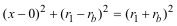 (3) La condición de tangencia entre Γ1 y Γc es
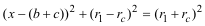 (4) Eliminando x entre (3) y (4) nos queda
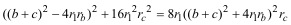 De donde hallamos r1 como
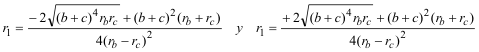
Pero el enunciado nos dice que el punto de tangencia de Γ1 está entre B y C lo que determina
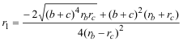 y eliminando radicales del numerador
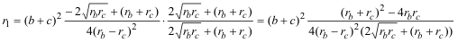
y simplificando el numerador y el denominador buscando un cuadrado en el denominador
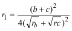
RELACIONES ENTRE LOS DIVERSOS RADIOS Entre los radios de los cuatro círculos inscritos se cumple
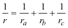 (10) y si A es el área del triángulo, también se cumple
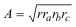 (11) Resolviendo (10) y (11) en función de r y ra
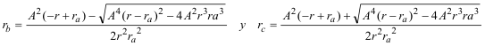
En la otra solución se intercambiarían los valores entre rb y rc. EXPRESIÓN DE ra y r EN FUNCIÓN DE LOS LADOS Recordemos primero que
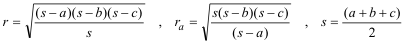 Con lo que nos queda
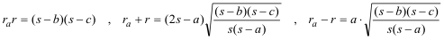
Introduciendo el valor del semiperímetro
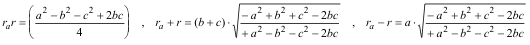 INTRODUCCIÓN DE LA CONDICIÓN DE TRIÁNGULO RECTÁNGULO
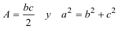 que transforman nuestras fórmulas en
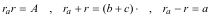 que introducidas en las expresiones de rb y rc
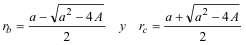 DETERMINACIÓN DE r1
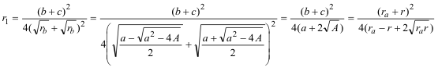 que es lo queríamos demostrar. |